January - March 2025
Dev Log 23
Project Update - January 2025
Made progress on the CAD for the lander this month. The lander will be built out of two sections of 74mm cardboard tube as the airframe, very similar to the way I build rockets. The aft airframe will have the EDF assembly which has an EDF with an air duct and exhaust tube mounted to it. Right below the EDF exhaust tube I'll have 4 servos with thrust vanes mounted, this will be used to control the vehicle. The forward airframe I'll have the nosecone, avionics, ESCs and camera (fig 1)
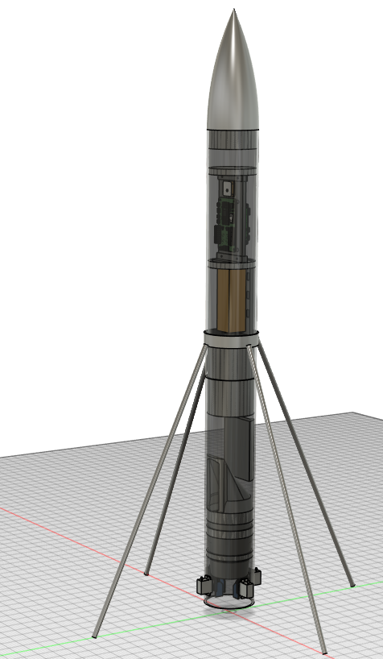
Making the thrust tube (fig 2) was quite straightforward. The opening matched the diameter of the EDF, and the exhaust port was around 12mm smaller than the opening diameter. Why the 12mm you may ask? It's because it looked cool in CAD, I haven't done any calculations to figure out the ideal exhaust port diameter, but I will do that soon enough.
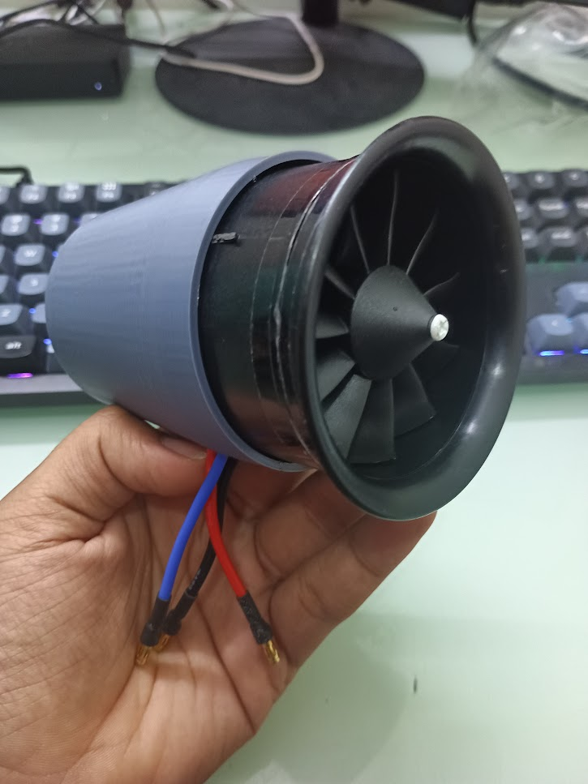
The air duct (fig 3) on the other hand was more difficult to design. With the first version I had a plain old triangle as the opening and no way to direct the air to the EDF. For the second version I designed a NACA duct and a path that directs air to the EDF. I realized this vehicle would not hit speeds where the NACA duct would be efficient, I just needed something that just let air in. So with the third version I had a squircle-ish design. Need to conduct some tests to check how well both the air duct and the thrust tube work.
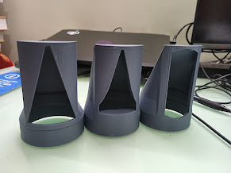
Also designed a test stand (fig 4) for the vehicle. It's going to be made out of a 2020 aluminum extrusion with a load cell on the bottom to measure EDF thrust and a load cell on one of the "arms" for the jet vane characterization.
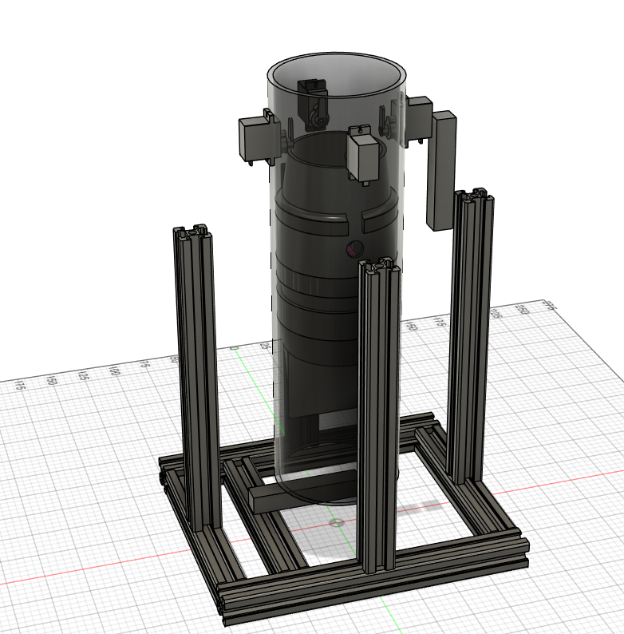
Apart from CAD I also made a new GCS UI (fig 5) for this project. Went back to the layout of a big GCS with rapidly updating graphs and just a ton of data like I did with GCS v1. It also has a big box with various controls of the vehicle in the middle. The GCS displays data from both the lander and also the catch tower.
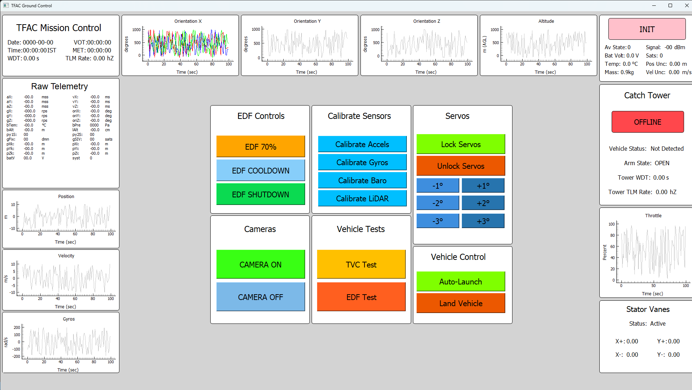
Project Update - February 2025
Didn't make much progress this month. I completely changed the design of the hopper. The cardboard tubes would add too much mass. The EDF is supposed provide 1.3kg of thrust (it'll almost certainly be lower than that), and the vehicle weighs around 1.5kg with the cardboard tubes themselves being over 0.6kg.
I'm scrapping the idea of using the cardboard tubes, instead I'll use the power of 3D printing and Carbon Fiber rods for structure. So far what I have going on is having three 4mm diameter CF rods for the structure and 3D printing all other components (fig 6).
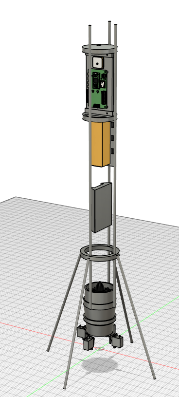
Eventually I switched to using two 8mm 500mm long CF rods, should have a design ready next month.
Project Update - March 2025
First up this month was refining the thrust tube. Until the the thrust tube was single purpose, but for this newer lander setup the thrust tube acts like a hub for the vehicle. The servos should be attached to the tube, the CF rods and some struts for the landing legs should all be able to interface with the tube (figs 7, 8).
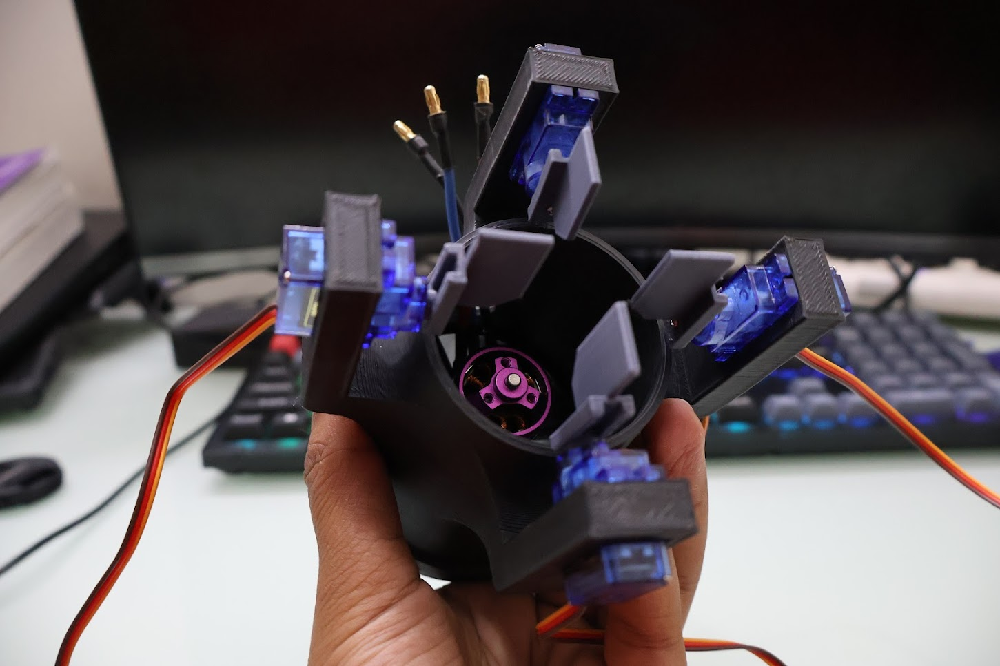
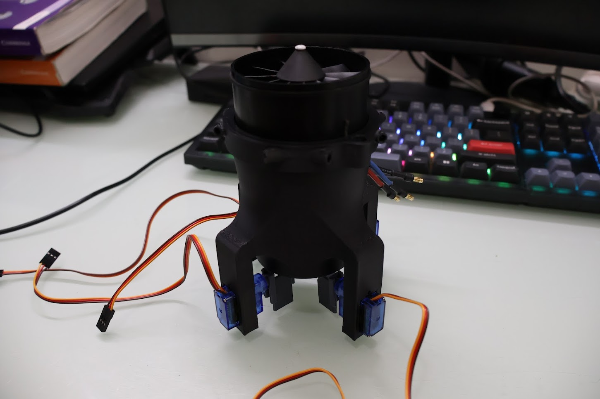
Then I began working on the landing leg setup. I wanted to use 4mm CF rods as the legs and struts. I was having a lot of problems safely cutting the CF rods (which I acquired in a unit length of 1000mm), and getting clean cuts. So instead I decided to 3D print the legs and leg setup. Ideally the legs shouldn't take much damage so 3D printing them shouldn't be a cause for concern. After that I put together the whole craft to do some tests (fig 9).
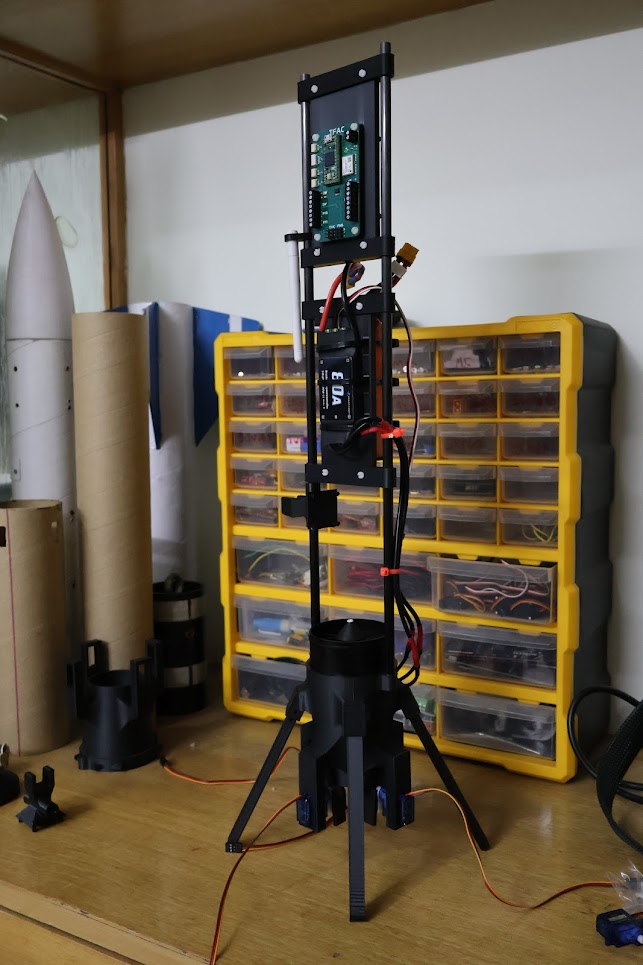
Next up I wanted to test out the EDF to see how much thrust it produced. The manufacturer says that the EDF should produce 1.3kg of thrust, but it's for sure going to be less than that. The question is how much lower is the actual thrust than the manufacturer's claim. I can live with a deficit of 0.2kg but any more than that and I have to seriously reconsider the propulsion system for the vehicle. I've cut down mass wherever I can, and I don't think I can lower it any more.
To measure the thrust I put together the test stand (fig 10, 11) I designed in January, but without the arms for measuring side forces from the thrust vanes. I also put together a quick and dirty little air inlet + load cell adapter that I 3D printed.
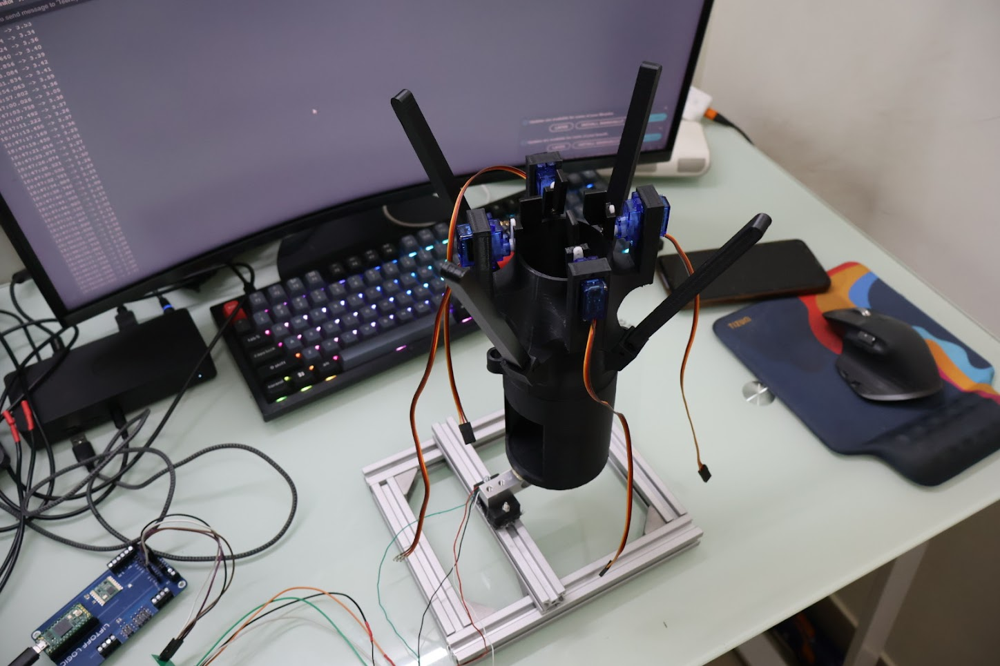
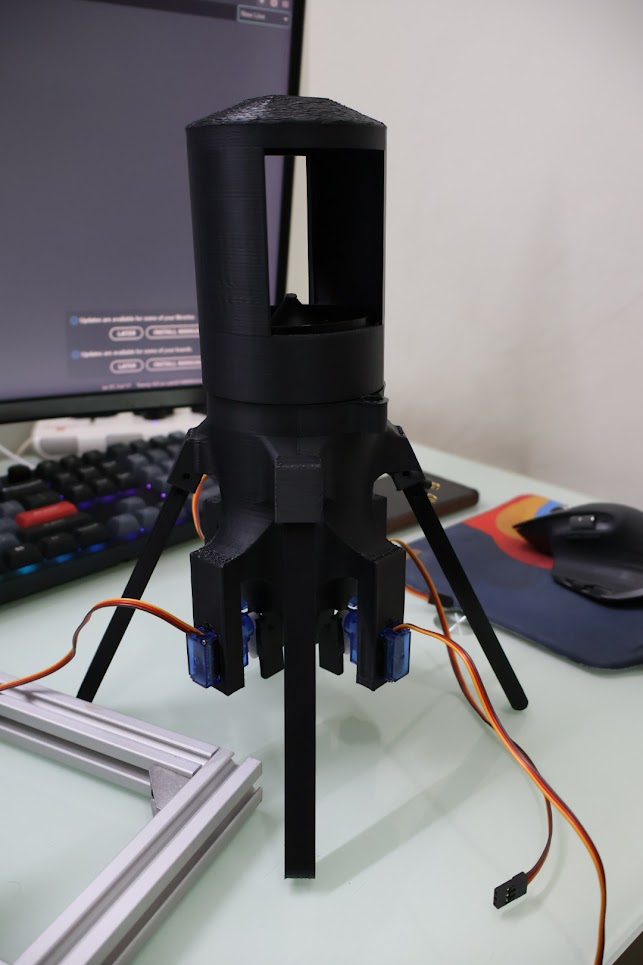
After this testing I realized that the EDF I've selected is way underspecced for this vehicle. After a couple of tests with a fully charged 4s 2200mAh LiPo I measured a peak thrust of around 0.8kg, which is too little so I'm going to have to change the propulsion setup. I really should've first tested the EDF on the load cell before going ahead and building the lander.
Enter Lander v3. As I was building the 2nd version of the Lander I realized that EDFs maybe aren't the best way to propel a vehicle like this, mainly because of the roll torques they produce. A way to combat this would be to have another set of propellers rotating in the opposite way. So now I think I'll use two brushless dc motors in a counter rotating setup. I've selected two EMAX Eco II 1300kv motors for this that have a peak thrust of over 2kg at full throttle on a 7" prop which is more than enough for what I need. The CAD will be ready next month.